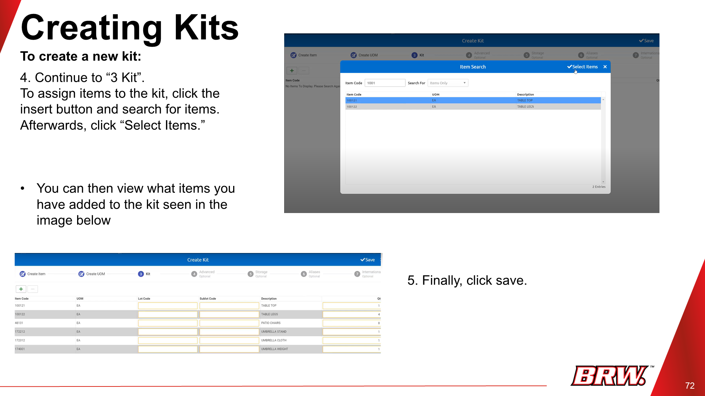
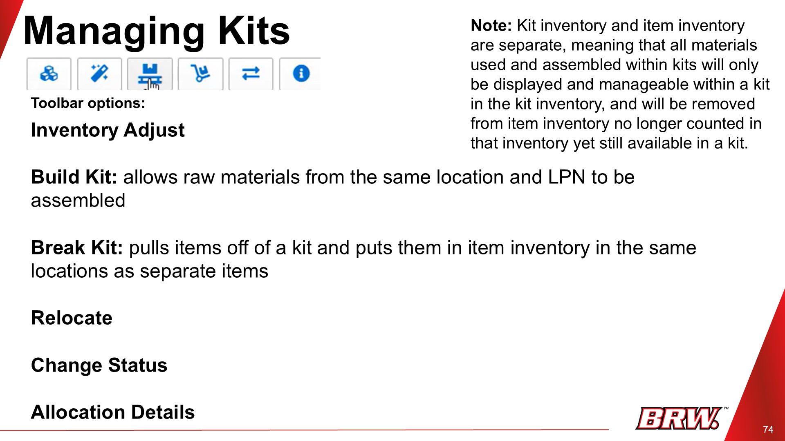
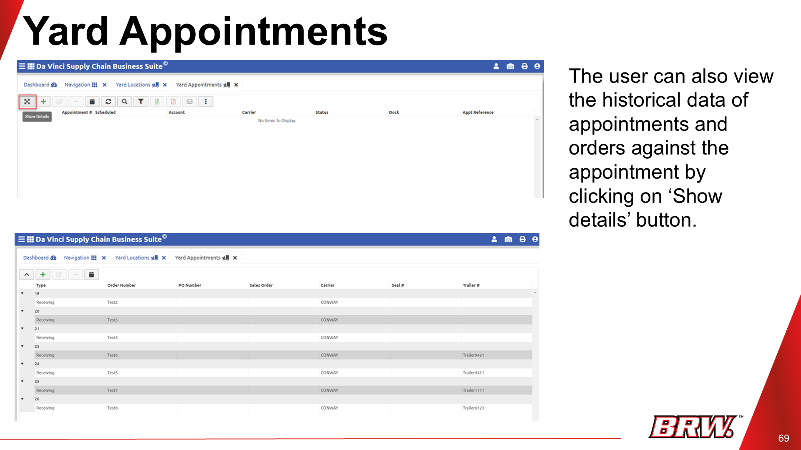

Introduction to Kits
A "kit" is a collection of individual items (components) assembled into a single, sellable unit. Kit management involves creating, tracking, building, and breaking down these assembled units in your inventory.
Creating Kits
Purpose: Define and build new kit configurations in your system.
- Navigate to Warehouse > Kits/BOM (Bill of Materials).
- Click "Insert" and fill in the necessary kit details (e.g., item code, description, group).
- Continue to "Create UOM" to define dimensions, weight, etc.
- Then, "Create Kit" and assign items to the kit by searching and selecting them.
- Click "Save".

Managing Kits (Kit Inventory)
Purpose: View and manage your existing kit inventory.
- Navigate to Warehouse > Kit Inventory.
- Search for an account to find available kits.
- Highlight a kit to activate the toolbar options for management.

Important: Kit inventory and individual item inventory are separate. Assembled kits are counted in kit inventory, and their components are removed from item inventory.
Managing Kits (Toolbar Options)

Purpose: Perform various actions on kits within your inventory.
- Inventory Adjust: Adjust kit quantities.
- Build Kit: Assemble raw materials into a kit (materials must be in the same location).
- Break Kit: Disassemble a kit back into its components.
- Relocate: Move kits to different locations.
- Change Status: Update the status of a kit.
- Allocation Details: View how kits are allocated.
Kitting on Orders (Receiving & Shipping)
Purpose: Apply kits as line items when receiving or shipping goods.
Receiving Orders
- Begin in Receiving Orders.
- Create an order and add required details.
- When adding line items, enter the kit code (not an individual item code) along with quantity and location.
- Save.
Shipping Orders
The same steps apply for shipping orders.
Kitting on Work Orders
Purpose: Apply kits within work orders for internal assembly or tasks.
- Navigate to Work Orders.
- Click "Insert", then choose "Kitting".
- Select the account and enter the order number in the General tab.
- In the Items box, enter the kit code, LPN, and location.
- Click "Allocate Raw Materials" to assign components for the kit build.